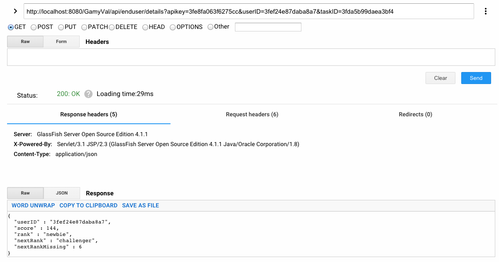
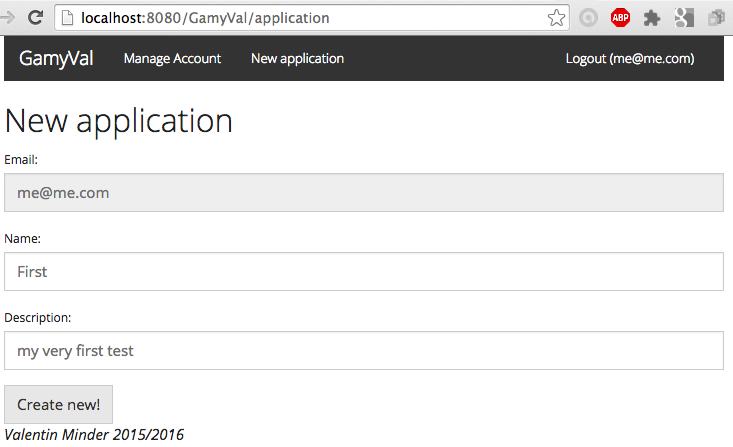

| Last name, first name | Github ID | Main role in the project |
|---|---|---|
| Minder, Valentin | ValentinMinder | "everything" |
Not relevant (solo project).
This document is a description of the work done in the AMT project about Gamification, using Java EE technologies, following by distance the AMT class (multi-tiers applications) from HEIG with Mr. Liechti, in 2015/2016.
The project assumes you have a working environement, with minimal config:
The connection to the datasource (jdbc/GamYDS to define in glassfish, within mysql_GamY_rootPool connection Pool) is assuming the mysql default configuration.
jdbc/GamYDSrootroot3306AMTDatabasejdbc:mysql://localhost:3306/AMTDatabase?zeroDateTimeBehavior=convertToNullConfiguration in glassfish properties:
localhost:4848/common/index.jsf
If you have updated glassfish from 4.1 to 4.1.1 (or you just reinstalled the tools), working with glassfish 4.1.1 you MAY encounter this error when using some of the Webservices, like the Rest Api or other functions.
StandardWrapperValve[javax.ws.rs.core.Application]: Servlet.service() for servlet javax.ws.rs.core.Application threw exception
java.lang.NoClassDefFoundError: Could not initialize class org.eclipse.persistence.jaxb.BeanValidationHelperMake sure glassfish is stopped and fix it the way it is suggested here (it's a 'dirty' hack but it works). https://java.net/jira/browse/GLASSFISH-21440
cd /Applications/NetBeans/glassfish-4.1.1/glassfish/modules/org.eclipse.persistence.moxy.jar filejar xf org.eclipse.persistence.moxy.jarMETA-INF/MANIFEST.MF file (use any editor that you like: vi, nano, gedit, ...)gedit org.eclipse.persistence.moxy/META-INF/MANIFEST.MFImport-package : and add the following at the end of it (it should end with org.xml.sax;resolution:=optional),org.xml.sax.helpers,javax.xml.parsers;resolution:=optional,javax.naming;resolution:=optionalorg.eclipse.persistence.moxy.jar filejar cvf org.eclipse.persistence.moxy.jar org.eclipse.persistence.moxyTo execute the application, you may follow these steps:
To access the application, mainly the user the User UI Interface, open any browser and point to the following address.
The usage of the UI should be intuitive. See the design section for more details.
The application is divided into 2 parts
The usage of the UI should be quite intuitive. It allows the following operations:
Rules for password creation and modification:
a-z)A-Z)0-9):.-!, symbols $£§°&#, diacritiques àéèê, etc) The REST api allows developpers of third-party app to send requests to the application using Http request and replies, with JSON objects when applicable. It is accessible at the following URL, where entrypoint correspond to the REST function exposed. See the design section for more details.
http://localhost:8080/GamyVal/api/v1/entrypoint
v1 stands for the version 1. If you should deploy a new version of the API, you will deploy it on v2 and still support requests to the old API for a while, giving time to your clients to upgrade.
In your IDE (like Netbeans), modify your code, hit clean and build, hit run, and the application is deployed in glassfish, automatically.
Not relevant in this context.
The first part, including Role, Account, ApiKey, Application and EndUser was strongly suggested by the specifications. The following is then defined by the author.
In the context of their app, the developpers will define Tasks. A task might be "upvoting" and worth 1 point, or "answering a question" and worth 5 points.
Then, every time a enduser performs one of these task, it's a new Event: a particular user for a particular task.
The ranks are then defined for every application based on the number of points acquired.

The gamification was developped arround RANK.
Rank is based solely on score (number of points acquired through tasks). Each rank is defined with a certain level of points. Every user then has the rank that is immediately lower than its score.
An example could be Rank: Newbie with 10 points, Rank: Challenger with 100 points, Rank: Expert with 1000 points. A user with 13 points would be of rank Newbie, and the next step for him would be rank Challenger, but he is still missing 87 points to reach the next rank.
Finally, the user can retrieve its score, current rank, the next rank to reach and the number of points missing to reach the next rank.
The UI allows the admin of an app to create an account (register), login and logout, modify the details of the account and create new application.
When logged in, we can see the stats of the system (number of accounts, number of application and number of end-user created the last 30 days).
Every request is to be prefixed by
http://localhost:8080/GamyVal/api/v1And this header when their is provided content (post and put)
Content-Type: application/json/account
/application
/enduser
/event
/rank
/task A full Api may provide:
The REST API on /application provides the whole set of CRUD operation to demonstrate its usage.
POST /application
{ "email":"me@me.com", "name":"New App", "descr":"new"}GET /applicationPUT /application/apikey
{ "name":"FirstApp", "descr ":"yes"}DELETE /application/apikeyGET /application/apikeyThe other entry points dont offer all of the functions, only those useful to demonstrate the usage of the app.
GET /accountGET /account/insecurePOST /enduser?apikey={apikey}GET /enduserPOST /task?apikey={apikey}
{ "name":"question", "score":12 }POST /event?apikey={apikey}&userID={userID}&taskID={taskID}POST /rank?apikey={apikey}
{ "name":"newbie", "score":10}GET /rank?apikey={apikey}GET /rank/ordered?apikey={apikey}GET /enduser/details?apikey={apikey}&userID={userID}{
"userID" : "3fef24e87daba8a7",
"score" : 10,
"rank" : "newbie",
"nextRank" : "master",
"nextRankMissing" : 25
}
MVC for the web pages (jsp pages - Servlet).
DAO for the Entity - DTO - Rest Resource.
src.javach.heigvd.amt.gamyval -> entry point
|models.entities -> entity (java pojo)
|restapi. -> REST content
|dtos -> DTO (Data transfer object)
|ressources -> REST services
|service.daos -> DAO and local DAO interface (data access object)
|webapp. -> web pages controllers
|controllers -> Servlet, entry point for web services and pages
|filters -> Servlet used for authentification verificationJsp Web pages
web. -> web pages
|index.jsp -> index page
|static -> js and css style documents
|WEB-INF. -> protected content
|web.xml -> description of servelt available and path
|pages -> all the jsp pages (views)For every Entity of the UML was defined a Jpa Entity for persistante, which was simples pojo's, with Java EE annotation for associations.
Then most of them turn into DAO (with their interface DAOLocal), at least all those who needed to be created by the API (call to create) or who provide business method (like Rank provides findAllOrdered and findGreaterRank).
The most used ones were also turned into one or several DTO's, either for creation or for transmission (see next section for details).
Finally services were provided for certain entities, to perform some or all of the CRUD operation (Create, Read, Update, Delete). See the REST API section for details.
Some of the Entities were turned into DTO's, for the following goals.
creation of Entity: when the dev creates an entity with the Rest Api, they might not know some of the fields that are specific to our implementation. An example mighe be the TaskNewDTO: the dev provides a name and points, but cannot provide the taskID that will be created by the app. Therefore a real Entity cannot be constructed yet. So the dev data will arrive in a DTO that contains the data provided by the dev, and the app will create the real Entity based on the DTO and generated data.
transmission of light-weight data: it does not copy the whole hierarchy but only the part that you choose. In case of an application, you dont want the whole structure of enduser and ranks to be replicated. This is used in ApplicationSummaryDTO: a real application consist of a list of Rank, a list of Task, etc. But we are just interested in the name and the apikey, so we created a DTO to send reduced data.
transmission of secured and limited data: it can help to protect sensitive data that are contained in the Entity that should never be sent. This is used in AccountSummaryDTO: only names and email are sent, without the password. If we would send the Account object, we would send the password credentials with it, which is a huge security flaw.
transmission of computed data: sometimes you want to send some aggregated or processed data. So you will perform a few computations and then send the results. This is used in EndUserSummaryDTO to send the score, the rank, the next rank and the missing points to the next rank. All these data are not stored but computed every time an end user ask for the statistics about his account.
sometimes it looks just "useless": the RankDTO is exactly the same as the Rank Entity. You might thought this is an error or a misunderstanding of the concept of DTO's and Entities. Much likely the code evolved and at the some point we needed a DTO, maybe because Rank Entity was containing some private or computed information, that has been removed afterwards.
This is a short description of what is demonstrable.
On the UI:
On the REST api: see the list of Rest Api description.
On the UI (with images)
security filter of home page (the home page is not accessible)

new account creation using the form

auto-login when sign-up

application details on home page

account edition of name/password

creation of new app within the UI 
creation of new app within the UI: success

Not relevant.
The following parts were not completed.
part 1: continued UI for app management
tests:
part 2:
part 3: this part was not developped, it was out of scope of a solo project.
As we can see the project was not finished completely but the part that was done proved most of the functionnalities and demonstrate the usage and comprehension of the subject.
While is working for the case it was thought, the project is not really modular for any real and complex gamification use for a real client. This is more like a proof-of-concept: at the end we can see the gamification working from end-to-end.
Doing this project alone and away from the lectures was a real challenge, both in terms of workload and knowledge. It wouldn't have been possible without reading a lot of documentation by myself and a lot of personnal work.